Computer Heritage Group

 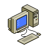
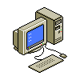
 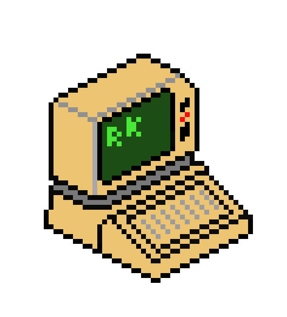
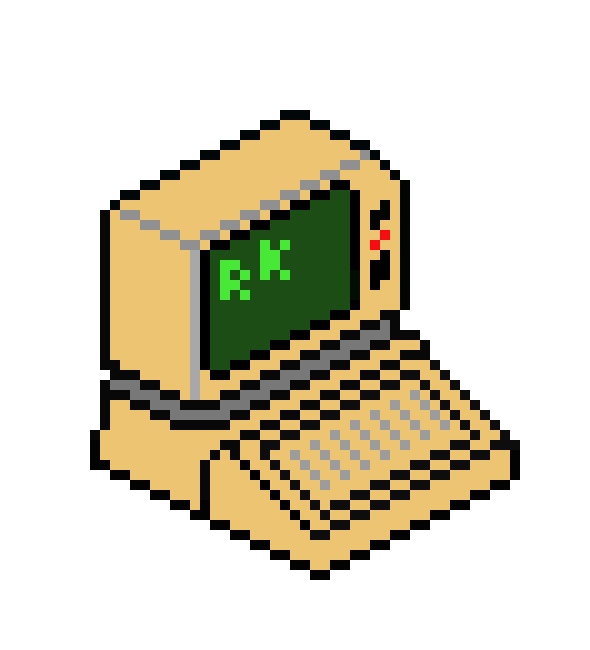
.png) 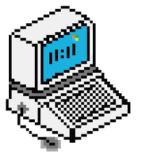
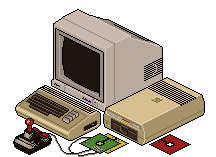
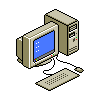
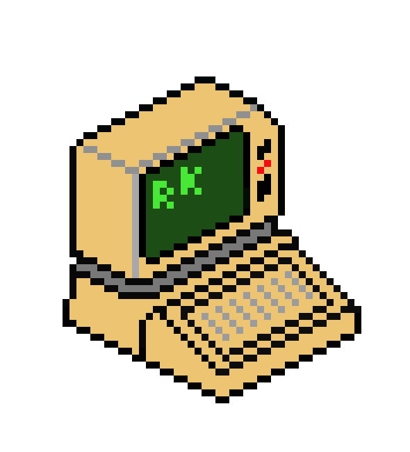
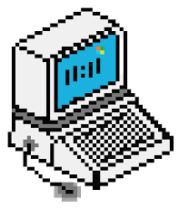
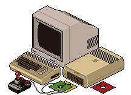
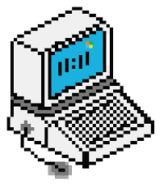
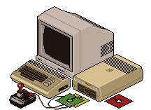
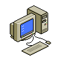
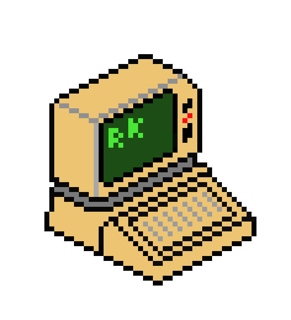
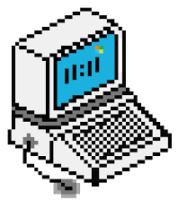
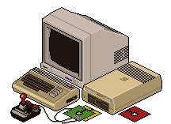
Centered in Kitchener-Waterloo Ontario Canada, some of us met while trading and trolling for old computers and parts using on-line classified ads. (Thank-you, kijiji.) Doing so we individually discovered that yes indeed, there were others equally fascinated with the oft-forgotten "original microcomputers".
We feel that emergence of 8-bit and similar computers represent the dawn of a new age in information technology--an age of enhanced individual capability and enpowerment.
Before the Internet and the ever-changing "modern" computer with its
multiple layers of programming abstraction, there was a simpler
time.
10 LET X=1
We believe the early microcomputers, as rough and frustrating as they often were, should be preserved so that future generations can see what early computing was like.
... Oh,... and yeah,... we play the games too.
Is there one specific computer you are concerned with?
No. While most of us own a Commodore 64 and the group started from an common interest in that particular machine, our collective collection currently comprises many early micros.
Are you all "fossils"?
Not by a long shot. We range in age from the 20-somethings to well into the 60's. Some of us "grew up" with these computers, while others started their scholastic careers with this one. Some of us are young IT professionals who are only now looking back to a time before they were born, to see what the computing environment used to look like.
We collect hardware and software.
We meet once a month to compare notes, demonstrate our toys to each other, and brainstorm solutions to problems and group projects.
... Oh, yeah,... we play games,...
Then come out to a meet-up! There are no official memberships, no dues, and no formal club structure. We just jam.
C'mon in and find us. We think you'll agree we are a welcoming bunch.
Did I mention we play games?
Kwartzlab Makerspace is not only our gracious host, but a fascinating geek haven with standout facilities for whatever you wish to construct with your own two hands and imagination. Check it out!
MindFlareRetro's YouTube channel.
ssshake's awesome TheOldNet portal.
TMA-1's retro-computers collection.
{kind=link}